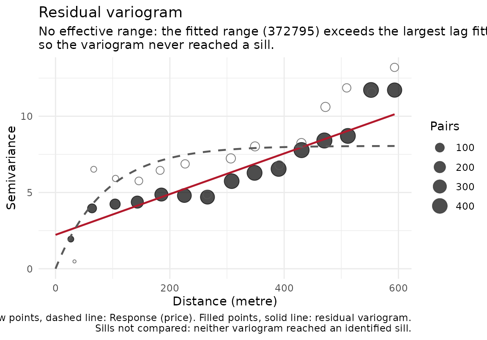
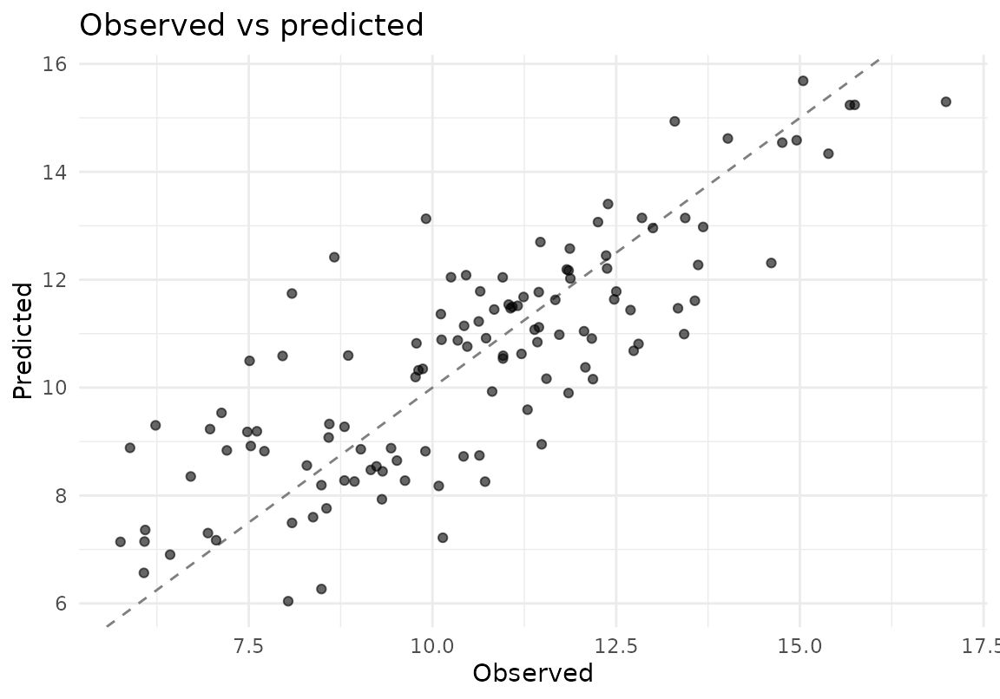
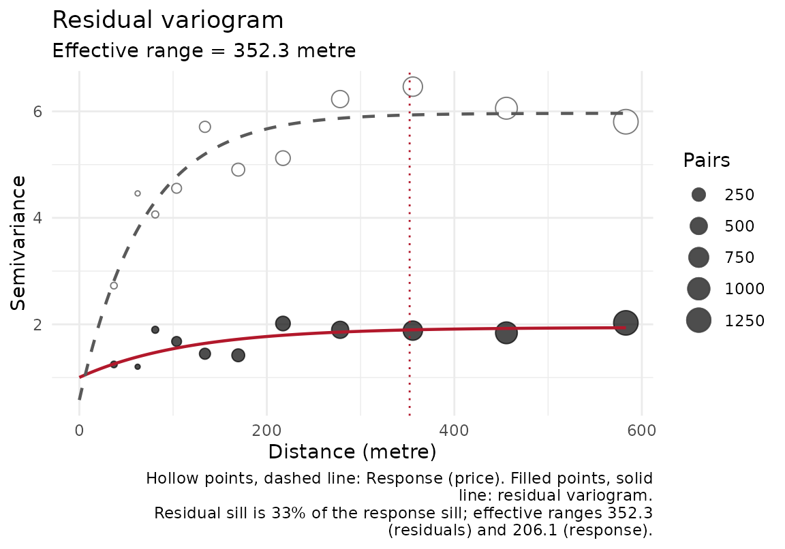

Draws one of four diagnostic plots of a spatial_fit, as a ggplot2
object: the residuals mapped at the training locations, observed against
fitted values, the residual variogram beside the response's, or, for a
GWR, the map of one local coefficient. Use it to see whether spatial
structure is left in the residuals, and where.
Arguments
- x
A
spatial_fit. The residuals drawn areresiduals(x); for a custom subclass with noresiduals()method (optional, seenew_spatial_fit()) they are the response minusfitted(x), which is what the built-in backends' methods return. The maps are drawn in x and y: adata_sfwhose geometries mix XY with XYZ or XYM is drawn without its Z and M.- type
One of:
"residuals"Residuals mapped at the training locations. Spatial structure here is the signal that the model has not captured the autocorrelation.
"observed_predicted"Observed against fitted, with a 1:1 reference line.
"variogram"Empirical variogram of the residuals with the fitted model overlaid, so the fit can be judged rather than trusted, and (unless
response = FALSE) the variogram of the response itself on the same points and lags, drawn hollow with a dashed fit. The gap between the two curves is the spatial structure the model absorbed: a residual sill well below the response sill means most of it, two curves that coincide mean none. When both effective ranges were identified over the same point pairs the caption gives the residual sill as a share of the response sill and the two ranges; when either variogram has no identified range, or the two are not over the same pairs, the caption says so and compares nothing: a sill the data never reached is not a number to divide by, and one direction's sill is not comparable with all directions'. The residual range is expected to come out shorter and the residual sill lower even when the model is right, because residuals of a fitted trend understate the variogram (seeestimate_sac_range(), "Detrending and the residual-variogram bias"). The distance axis is labelled in the units of the CRS the variogram was fitted in, which is not always the fit's own CRS (lon/lat data are projected first). Each curve is the variogramestimate_sac_range()returns for its variable, which is over all point pairs. A fit that identified no range says why in the subtitle, since the overlaid model line is then not a fit to believe. Requires gstat."coefficients"For a GWR fit only: the local coefficient of one
termmapped at the training locations, which is the reason to fit GWR at all. Locations where the local design is collinear for that term are drawn hollow and grey (mask = TRUE): for a slope, where the kernel-weighted window's slope condition index (cn_slopes, predictors centred in the window) is above 30 or the window is singular; a predictor far from zero is not masked, because the local solve centres each window and the index with the intercept (cn) does not enter; for the Intercept, wherecnis above 30 (a predictor far from 0 against its local spread makes the local intercept an extrapolation). They are masked because the smooth surface a naive map draws over them is the picture of an unstable estimate, not of a relationship; the subtitle counts them. The condition indices are the fit'sinfo$local_collinearity, computed for every location when the model was fitted. A diverging scale centred on zero is used when the coefficient changes sign, otherwise a sequential one.
- response
Logical, default
TRUE: fortype = "variogram", overlay the response's own variogram. Ignored by the other types.- term
For
type = "coefficients": which local coefficient to map, one of the namescoef(x)returns. DefaultNULL: the first predictor. Ignored by the other types.- mask
For
type = "coefficients": whether to draw locations whose local design is collinear for that term (seetype = "coefficients") as hollow grey points instead of colouring them by a coefficient that is not to be believed there. DefaultTRUE. Locations whose coefficient is non-finite are masked either way.- ...
Ignored.
See also
coef.gwr_fit() for the coefficients themselves.
Other fit methods:
print.spatial_fit(),
spatial_fit-coef,
spatial_fit-fitted,
spatial_fit-predict,
spatial_fit-residuals,
summary.spatial_fit()
Examples
# Works on any spatial_fit; a forest keeps the example free of the optional
# GWR and Stan backends.
library(sf)
# price depends on elevation, which the forest sees, and on a spatially
# correlated field it does not: that field is what the residual plots are
# there to find.
set.seed(2)
n <- 120
xy <- data.frame(x = 5e5 + runif(n, 0, 1000), y = 5e6 + runif(n, 0, 1000),
elev = rnorm(n))
D <- as.matrix(dist(xy[, c("x", "y")]))
xy$price <- 10 + 2 * xy$elev +
as.numeric(t(chol(exp(-D / 100) + diag(0.3, n))) %*% rnorm(n))
pts <- st_as_sf(xy, coords = c("x", "y"), crs = 32632)
fit <- fit_rf_model(pts, "price", "elev", num_trees = 100, seed = 1)
plot(fit, type = "residuals") # structure left in the residuals

plot(fit, type = "observed_predicted")

if (requireNamespace("gstat", quietly = TRUE))
plot(fit, type = "variogram") # residual and response variograms
